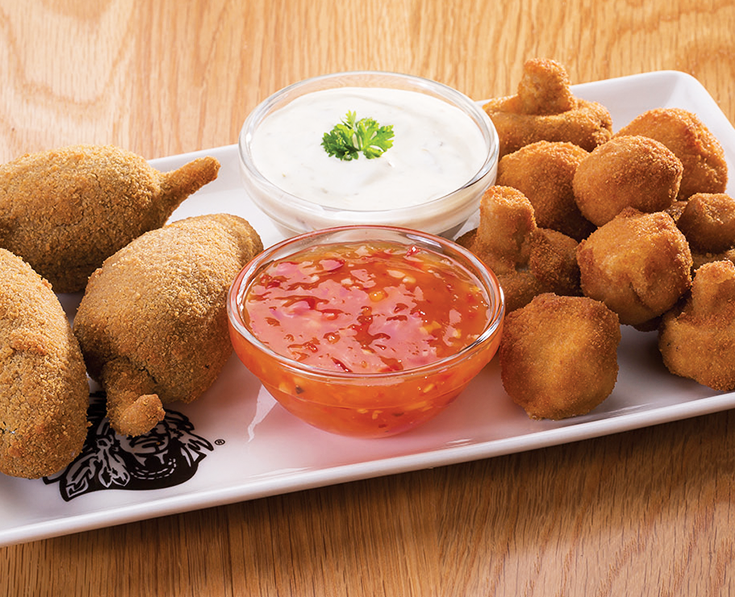

CHARLOTTE'S

Fried Mashroom
Prep time:
20 mins
Yield:
9
Price:
R82.50
Extra Requests
2 extra cheese
Extra mild sauce
Extra BBQ sauce
Extra chilly sauce
Steps
Wash the mushrooms and remove most of the stem.
Pat mushrooms dry with a paper towel.
Coat mushrooms with flour, lightly tap to remove excess flour.
Heat the oil in the deep fryer to 375 degrees. Pay close attention to grease while it heats.
Deep fry mushrooms in batches for approximately 3- 4 minutes or until golden brown.